Chào mừng đến với DigiX Lab
Đăng nhập SSO sẽ được kết nối khi tích hợp ứng dụng. Trong bản mẫu, bạn có thể tiếp tục để xem luồng chọn doanh nghiệp.
Prototype không xác thực tài khoản và không gửi dữ liệu tới backend.

← Trang giới thiệuChọn doanh nghiệp, tạo ứng dụng nháp và đi theo luồng mô tả nguồn → chuẩn hóa → Builder.
Đăng nhập SSO sẽ được kết nối khi tích hợp ứng dụng. Trong bản mẫu, bạn có thể tiếp tục để xem luồng chọn doanh nghiệp.